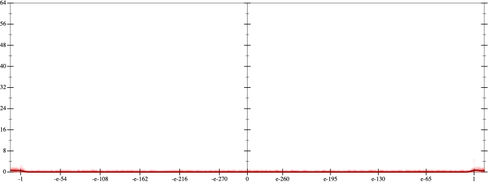
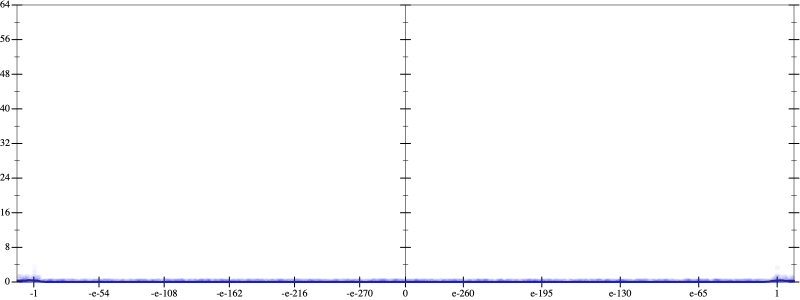
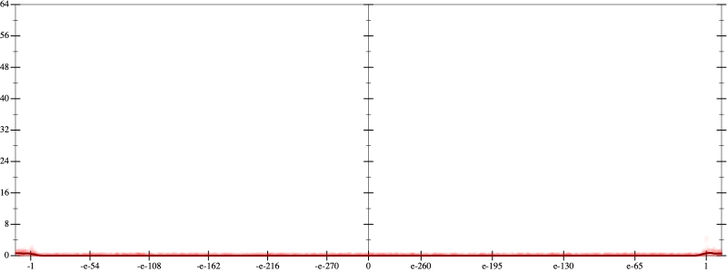
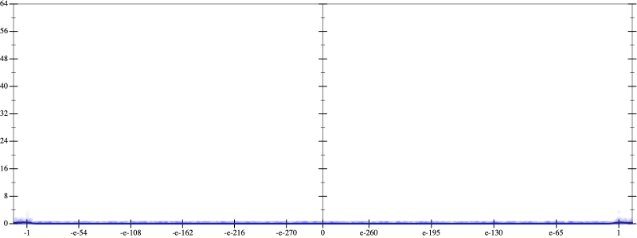
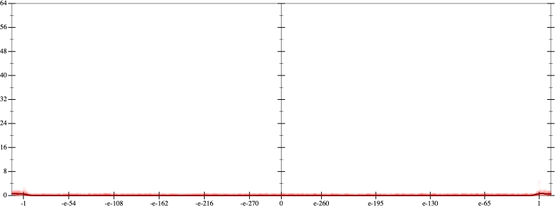
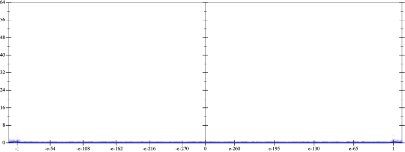

Error
 
Bits error versus x
Bits error versus x
Results
Initial program 0.0
Applied simplify0.0
Taylor expanded around 0 0.0
Time bar (total: 50.5s)Debug log
herbie shell --seed 1000236972
(FPCore (x)
:name "6"
:pre (and (>= x -1e+14) (<= x 1e+14))
(+ (+ (+ -0.3125 (* 6.5625 (* x x))) (* -19.6875 (* (* (* x x) x) x))) (* 14.4375 (* (* (* (* (* x x) x) x) x) x))))